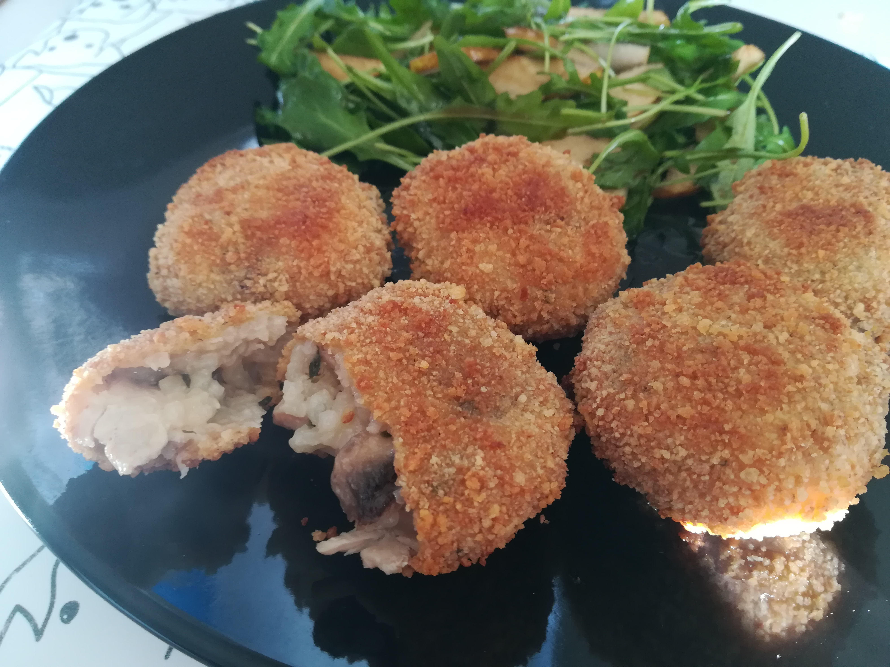

 Panes y masas
Panes y masas Pastas
Pastas Pescados y mariscos
Pescados y mariscos Verduras
Verduras Arroces y cereales
Arroces y cereales Ensaladas
Ensaladas Huevos
Huevos Tartas/empanadas y sandwiches
Tartas/empanadas y sandwiches Entradas y canapes
Entradas y canapes Celiacos
Celiacos Bebidas y cocteles
Bebidas y cocteles